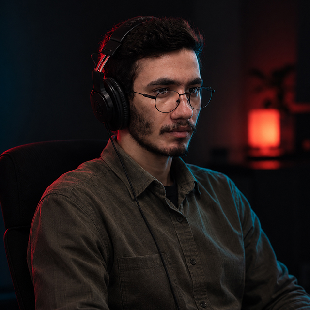

موشن گرافیست · تدوینگر
امیررضا صیدی
Amirreza Seydi
تصویر را به حرکت تبدیل میکنم. موشن گرافیک، تیزر و تدوین برای رسانهها و برندها.
تهران، ایران

شوریل
شوریل
۰۱ — نمونهکارها
کارهای انتخابشده
کمبود گاز در ایران
گزارش دیداری ۱۴۰۵
مسیرهای ترافیکی مراسم تشییع
گزارش دیداری ۱۴۰۵
سه مهمان تهران
گزارش دیداری ۱۴۰۵
لوگوموشن نوانو
لوگوموشن ۱۴۰۵
لوگوموشن کاشف
لوگوموشن ۱۴۰۳
برای دیدن ویدیوهای کامل، روی هر کار کلیک کن. نمونههای بلندتر را میتوانم در تماس بفرستم.
۰۲ — درباره من
پشت میز تدوین
موشن گرافیست و تدوینگر مقیم تهران. کارم این است که ایده را به حرکتی تبدیل کنم که در سه ثانیه اول گرفته شود.
بیشتر کارهایم با یک سؤال شروع میشود: این تصویر باید چه چیزی را منتقل کند؟ از همانجا سناریو، استوریبرد و طراحی حرکت میآید. با After Effects و Premiere کار میکنم و کنارشان از هوش مصنوعی استفاده میکنم تا ایده سریعتر به تصویر برسد — ولی تصمیم نهایی درباره ریتم و روایت همیشه انسانی میماند.
- After Effectsموشن گرافیک
- Premiere Proتدوین
- Photoshopطراحی تصویر
- هوش مصنوعیایده و تولید